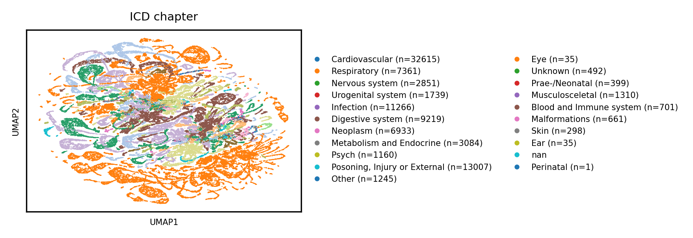
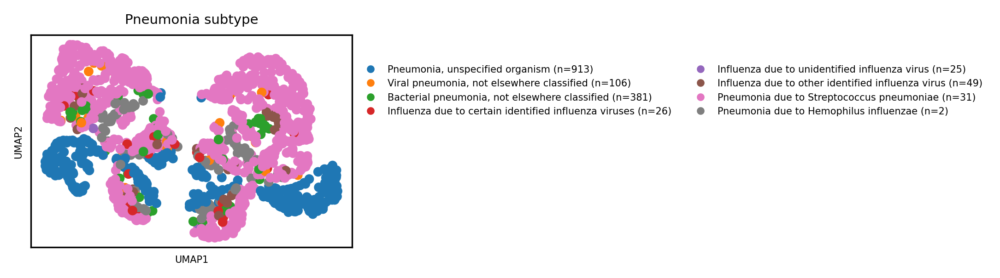
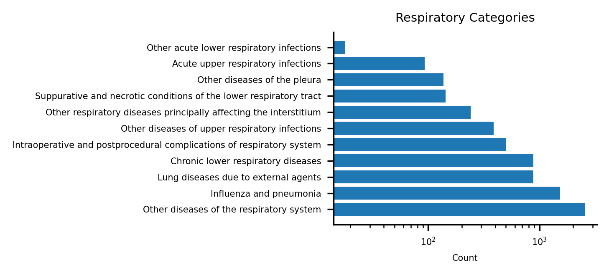
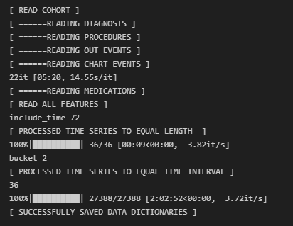
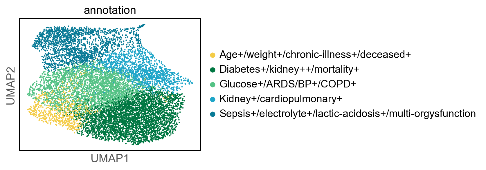
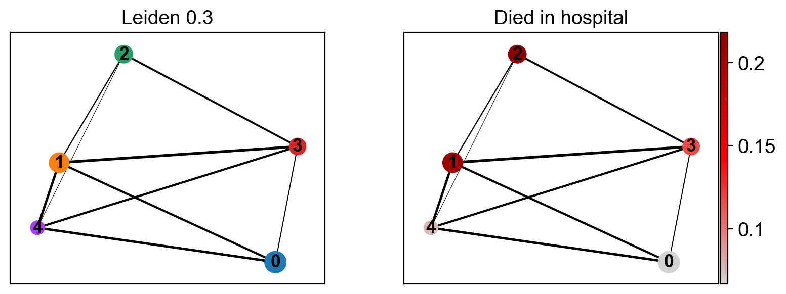
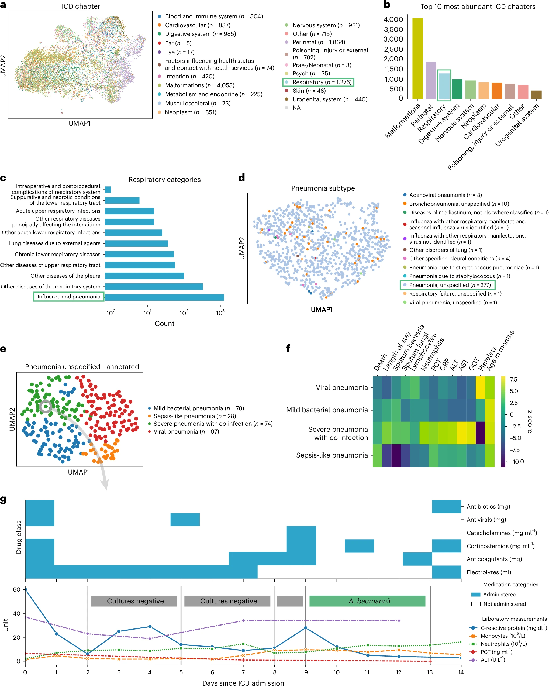

Final MIMIC-IV Paper
https://github.com/cmsalgado/book_chapter/blob/master/book_chapter.ipynb <- time series clustering on mimic
13% hospital mortality rate.
Introduction
Goal: Provide background, define the problem, and state your research objectives.
Problem Statement: Describe why traditional methods fall short and why a framework like ehrapy is valuable.
The increasing digitization of healthcare systems has led to vast collections of electronic health records (EHRs), presenting both opportunities and challenges for medical research [1]. While these datasets contain valuable insights for improving patient care, their heterogeneous nature and lack of standardized analysis approaches have limited their utility [2]. Two recent developments offer promising directions for addressing these challenges: the ehrapy framework, an opensource Python package designed specifically for exploratory analysis of EHR data [2], and advances in machine learning approaches for EHR phenotyping [1]. EHR phenotyping is the process of using electronic health records (EHRs) to identify patients with a specific characteristic or condition. This process is important for research purposes, such as identifying patients for clinical trials.
ehrapy incorporates a series of analytical steps, from data extraction and quality control to the gneration of low-dimension feature representations. Complemented by statistical modules, ehrapy facilitates associating patients with disease states, differential comparison between patient clusters, survival analysis, trajectory inference, causal inference and more. Leveraging ontologies, ehrapy further enables data sharing and training EHR deep learning models, paving the way for foundational models in biomedical research.
The MIMIC-IV clinical database provides an ideal test ground for this work, containing comprehensive clinical data from ICU and non-ICU patients at Beth Israel Deaconess Medical Center (A. E. W. Johnson et al. 2023). Its structured format and rich clinical information enable direct comparison with analyses performed on the original Pediatric Intensive Care (PIC) database (Li, Zeng, and Yu 2020), while its scope and complexity make it suitable for testing advanced machine learning implementations.
Research Objectives:
- Replication: Validating ehrapy’s ability to stratify pneumonia patients (adapting the original pediatric analysis to adults in MIMIC-IV).
To deepen clinical phenotyping for the disease group ‘unspecified pneumonia’, we calculated a k-nearest neighbor graph to cluster patients into groups and visualize these in UMAP space (Methods). Leiden clustering62 identified four patient groupings with distinct clinical features that we annotated (Fig. 2e). As in the original paper, we will implement the Leiden clustering algorithm to identify subclasses of pneumonia patients in an adult cohort. The Leiden clustering algorithm is a graph-based community detection method used primarily for identifying clusters in complex networks. It’s an improvement upon the popular Louvain algorithm, designed specifically to overcome some of Louvain’s limitations, such as poorly connected or fragmented clusters. - Extension: Implementing machine learning (e.g., RNNs) to enhance phenotyping.
Our project had two complementary aims:
First, to validate ehrapy’s effectiveness and generalizability we replicated key analyses from the original paper that had used ehrapy to stratify pediatric patients (PIC database) affected by unspecified pneumonia into finer-grained phenotypes. We validated this work by implementing the same methodology but in an adult cohort and using the MIMIC-IV dataset [3]. Second, we extended the framework by implementing a machine learning approach to predict in-hospital mortality for each of our clustered groups. Our dual approach was used to both validate the original methodological framework and python tools and demonstrate its potential for supporting more sophisticated analytical techniques.
Methods
Our investigation was conducted in two phases, first we validated ehrapy’s core functionality through replicating their prior work and then extended it to machine learning-based phenotyping (Heumos et al. 2024).
MIMIC-IV
All data utilized in this study were extracted from the MIMIC-IV database version 3.1, containing de-identified health data associated with approximately 50,000 hospital admissions for adult patients between 2008-2019 (A. E. W. Johnson et al. 2023). The database includes detailed client and hospital level information including patient demographics, vital signs, laboratory measurements, medications, diagnoses, and procedures carried out in both the intensive care unit (ICU), the hospital and emergency department (ED). Credentialed access to MIMIC-IV was obtained through PhysioNet and all analyses was conducted in compliance with the database usage agreement (A. Johnson et al. 2023).
Following the methodology Heumos et al. (2024) , we first set out to validate ehrapy’s basic functionality for cohort identification and characterization by identifying and stratifying adult patients diagnosed with unspecified pneumonia into distinct phenotypic groups (A. Johnson et al. 2023). To do this, we completed the following steps:
Used ehrapy to prepare and preprocess data (see Fig)
Use ehrapy’s clustering capabilities to analyze laboratory values, vital signs, and medication patterns (Heumos et al. 2024)
Identify clinically meaningful subgroups in adult pneumonia cases
Compare findings with the original pediatric patient analysis to evaluate pattern consistency across age groups



Framework Validation via Patient Stratification
- After missing data imputation and subsequent preprocessing (See figures), we generated a uniform manifold approximation and projection (UMAP) embedding to visualize variation across all patients in our cohort using ehrapy.
- Create UMAP of all patient visits in the ICU with primary discharge diagnosis grouped by ICD grouping. (See original paper and recreate graphs). This visualization of the low-dimensional patient manifold shows the heterogeneity of the collected data in the MIMIC-IV database, with __________, _________ and ______________ being the most abundant ICD chapters.
Clustering Approach: Describe the methods used (e.g., k-means, hierarchical clustering). Evaluation Metrics: How did you assess ehrapy’s stratification performance?
Machine Learning Extension (Phase 2)
Model Selection: Justify the use of RNNs for EHR phenotyping. Feature Engineering: Describe how you converted time-series EHR data into model-ready inputs. Training & Validation: How did you train/test the model? What hyperparameters were used? Performance Metrics: Describe how you evaluated the ML model (e.g., AUC, F1-score, silhouette scores for clustering).
Sample Population
Results (3-4 pages)

Goal: Present key findings objectively, using figures and tables.
 
Validation Results (Phase 1)
Stratified pneumonia subgroups: Describe the clusters formed and compare them to the original pediatric study. Statistical differences: Highlight major differences/similarities across age groups. ## ML Phenotyping Results (Phase 2)
Performance Metrics: Report accuracy, AUC, or other key metrics of the RNN model. Comparison with Clustering Approach: How well did ML-based phenotyping align with ehrapy’s unsupervised stratification? Visualization: Include figures (e.g., t-SNE plots, confusion matrices).
Ehrapy framework
The ehrapy framework was utilized to phenotype adult pneumonia patients using electronic health record (EHR) data. ehrapy provides a modular pipeline designed for standardized data pre-processing and analysis, facilitating reproducibility and collaboration among researchers. The modularity of the framework allows researchers to customize and extend functionality according to specific analytical needs.
Data loading within ehrapy is streamlined through dedicated modules that store structured EHR data in AnnData objects, which support various matrix formats (dense, sparse, ragged) and incorporate comprehensive metadata annotations crucial for cohort tracking and contextual analysis (Virshup et al., n.d.). Cohort tracking functionality in ehrapy enables researchers to systematically follow patient cohorts over time, ensuring accurate longitudinal analyses and facilitating reliable phenotype characterization. For example, we can track all transformations applied to data, making it easier to revert to or visualize original, untransformed values even after extensive processing.
This study will utilize the MIMIC-IV database, which contains de-identified health data associated with approximately 50,000 hospital admissions for adult patients between 2008-2019 (A. Johnson et al. 2023). The database includes detailed information about patient demographics, vital signs, laboratory measurements, medications, diagnoses, and procedures. We have obtained credentialed access to MIMIC-IV through PhysioNet and will conduct all analyses in compliance with the database usage agreement (A. Johnson et al. 2023).
